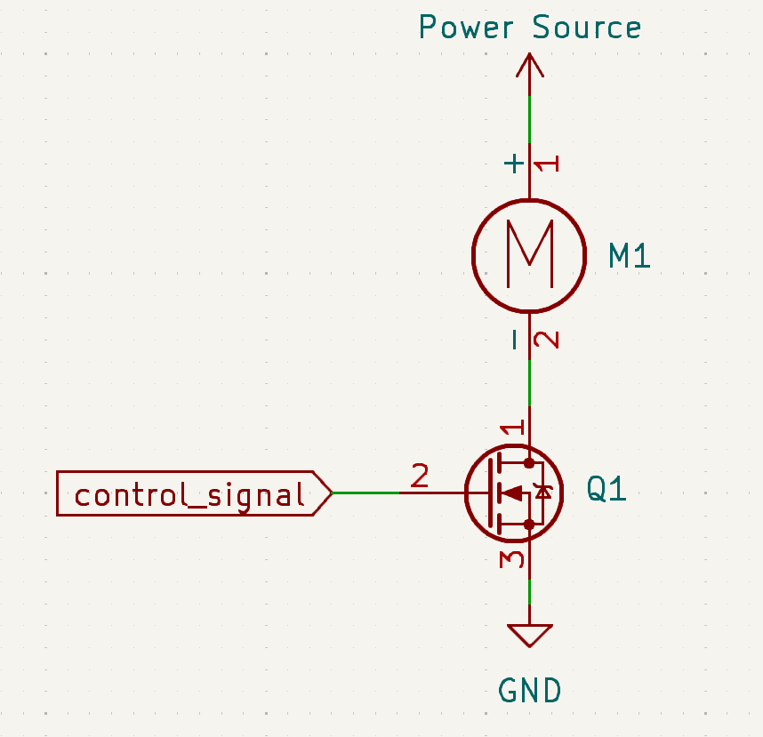
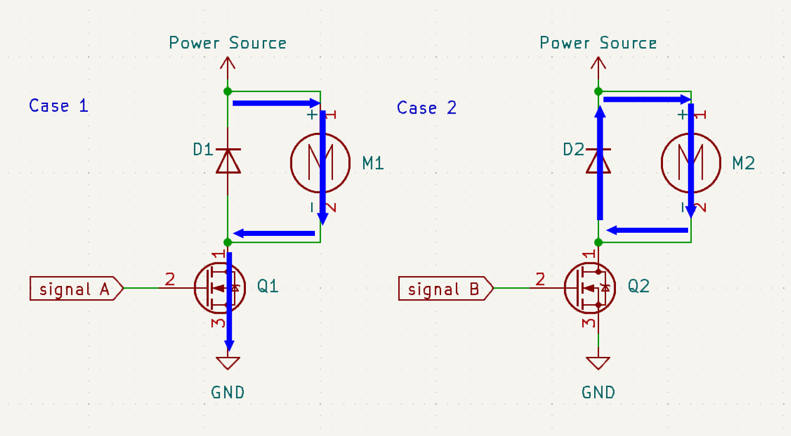

Luciferin pt1: Motor control
Published
This is the first in a series of posts discussing the research, design work and fabrication of a custom motor controller for my school's racing team, Firefly, competing in the Greenpower F24+ championship.
The name Luciferin came from the substrate of the enzyme luciferase and is responsible for making fireflies glow. In a similar sense, this project was designed to give Firefly a competitive edge on track.
F24+ is a power-limited electric racing series in which every team is required to use the same unmodified batteries and motor. As a result outright performance is determined by how efficiently a car is able to convert a fixed amount of stored energy into lap time. In F24+, races last one hour, and the goal is to go as fast as possible for the entire duration without running out of energy prematurely or finishing the race having failed to extract all of the energy from the batteries.
Drawing too much current early in the race can lead to rapid voltage sag and a disproportionate loss of usable battery capacity, however, being overly conservative results in unused energy and slow lap times. Historically, Firefly's primary means of managing this trade-off was through the choice of a fixed gear ratio selected before the race (a common strategy employed by Greenpower teams). Although this can prove to be quite effective, once the race begins, the car can no longer adapt to changing conditions such as battery health, gradients or wind. Any attempt to introduce adaptability through mechanical means, such as including multiple gear ratios, would introduce an unacceptable level of complexity, increased mass and potential reliability risk.
This left motor control as a promising idea to pursue. While there were clearly mechanical efficiency gains to be made elsewhere on the car through drivetrain optimisation, rolling resistance and aerodynamic refinement, I wanted to focus on how I could make the car able to dynamically adapt to a changing environment. How current is delivered to the motor has a direct impact on both motor efficiency and battery performance.
A key consideration for this work was the behaviour of the lead-acid batteries. Unlike an ideal energy source, the usable capacity of a lead-acid battery depends on how quickly it is discharged. This relationship is described by Peukert's law:
This means that drawing twice the current does not halve the available runtime but actually harms it by significantly more. For the Yuasa REC36 batteries used by Firefly, experimental discharge data from our battery dyno showed a Peukert exponent of approximately 1.2; typical for lead-acid chemistry. At this value, doubling the discharge current reduces the usable discharge time to around 43% of what would be expected under ideal conditions.
Crucially, this penalty is asymmetric. High current spikes are more damaging to overall efficiency than low current periods are rewarding. As a result, overall energy output is maximised by keeping current draw smooth and consistent over the course of the race. Short bursts of aggressive acceleration (and therefore current draw) cost more usable energy than they gain in lap time, even if average power output may still appear reasonable.
This alone justified the need for a motor controller. Off-the-shelf solutions do exist, such as the ones provided by Porter 4QD, but where's the fun in that?
Jokes aside, a custom solution has its benefits. We get to define the switching characteristics and gain the ability to write more complex control algorithms defining motor behaviour.
The base theory behind motor control is to turn the motor on and off at a very high frequency so that the motor "sees" a lower voltage than what is actually being supplied to it. Anyone with any experience in electronics will recognise this as a description of PWM. If we were to treat the motor as a nice, well-behaved passive load, the simplest possible "motor controller" would look something like Figure 1, where a control signal switches a MOSFET which in turn switches the motor on and off.

Of course, in reality, the motor is not a passive load and modelling it as a mere resistive load is insufficient. When abstracted, the brushed DC motor used in Greenpower can be modelled with three key electrical characteristics: a winding resistance, an inductance and a back EMF proportional to rotational speed. Together, these determine how the motor responds to changes in voltage and current.
While all three are important, it is the inductive behaviour of the motor that becomes critical once the supply is switched. The inductance resists changes in current, and will generate potentially very high voltages in order to keep current flowing when the external power source is disconnected.
It should now be clear why the circuit shown in Figure 1 fails. When the control signal goes low and the MOSFET turns off, the inductance of the motor winding resists the sudden interruption of current. In doing so, the motor generates a large potential difference in an attempt to keep current flowing. In the absence of any additional protection, this behaviour can exceed the MOSFET's safe operating limits, resulting in the release of the all-too-familiar magic smoke.
The solution is actually quite simple. We provide an additional path for current to flow in the case that power is disconnected in the form of a diode. This is depicted in Figure 2:

This is an acceptable solution for most applications. However, the diode has a voltage drop across it and is therefore a relatively inefficient component when compared to the MOSFET. This means that a significant amount of power is dissipated as heat in the diode when the current is circulating through it, i.e. when the motor is not powered.
The significance of this power loss is determined by the fraction of time the switch is off. At high duty cycles, for example 99%, the diode is only conducting for a small portion of each cycle and the associated losses are small. At lower duty cycles, for example 60%, the diode conducts for a much larger portion of the time, thereby increasing power dissipation.
To reduce these losses, the diode can be replaced with an actively controlled MOSFET operating as a synchronous rectifier. By turning this device on during the freewheeling interval, motor current is redirected through a low-resistance channel rather than a diode. This reduces conduction losses and improves overall efficiency. This revised model is shown in Figure 3.

Using two MOSFETs in place of a diode introduces an important complication: unlike a diode, a MOSFET allows current to flow in both directions when it is conducting. This behaviour can be understood by considering the current in the motor during the off-time of the PWM cycle.
When the motor is switched off, the current circulating through the windings decays as the energy stored in the motor inductance is dissipated. In the case where a diode is used, this current naturally falls to zero, at which point the diode becomes reverse-biased and prevents any further current flow. This ensures that the motor current cannot reverse direction once the stored energy has been exhausted.
If the diode is replaced with a MOSFET, this failsafe no longer exists. Under certain conditions, such as when the motor is not switched back on sufficiently quickly, the inductive energy in the motor may be insufficient to counteract the back EMF generated by the rotating motor. In this case, the current can fall through zero and become negative. This corresponds to the motor actively driving current back into the circuit rather than drawing it, a phenomenon known as motor braking. While motor braking has valid applications, it is clearly undesirable in this context, where the objective is to deliver continuous drive to the motor.
To avoid this, the switching frequency must be high enough that the motor inductance does not fully discharge during the off-time of the PWM cycle. Based on the measured electrical characteristics of the Greenpower motor, the winding current decays on the order of a few milliseconds, implying a minimum switching frequency of a few hundred hertz to prevent current reversal. In practice, the motor is switched at a much higher frequency of 20 kHz, ensuring continuous positive current while also moving switching artefacts beyond the audible range.
An additional consideration is that if both MOSFETs were ever turned on at the same time, even extremely breifly, they would form a direct short across the supply. The way to prevent this is with careful timing of the switching signals. How this is handled, along with the full schematic of the controller and its peripherals, is the focus of Part 2.